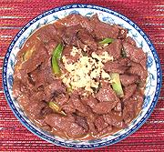

|
Braised Beef TaiyuanChina - Taiyuan - Taiyuan men niurou | ||||
| Serves: Effort: Sched: DoAhead: |
2 main *** 45 min Part |
From the northern city of Taiyuan, this is simply beef with a sauce. The flavor is quite intense, so it should be served with plenty of rice and a less intense side dish. | |||
|
1 ----- 10 1 1/3 1/4 ----- 1/2 3 1 1/3 1 1 ----- 1/4 |
# --- T c c --- T T c T t --- in |
Beef, lean ---- Marinade Scallions Cornstarch Water Soy Sauce ---------- Sichuan Pepper (1) Oil (2) Star Anise Stock (3) Rice Wine (4) Sesame Oil -- Garnish Ginger root |
Prep - (30 min)
|